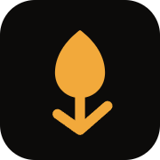

ethantam.dev already has a look: near-black with warm off-white text, one amber, Geist for words, Geist Mono for the ticker and the small print, and Instrument Serif italic for a single word or line. It is the family's home page, and every project keeps its own look and appears here as a guest. This guide names the site's look so the GitLab repo and anything that links home agree with it. It changes nothing.
Every colour below is a token in styles.css at v1.0.1. The site is dark by default; a light theme follows the system or the visitor's choice. The headline is the site's own tagline.
An amber tulip on a near-black rounded square: one bulb on a stem whose two leaves point down like an arrow. It is the favicon, the manifest icon and the mark beside the name at the top of the page.

A 32-unit grid with 7-unit corners. The bulb is one closed path from 16,6 down to a round base at 16,19.6. The stem runs to 16,26 and two leaves leave its foot to the upper left and right, stroke 2, round caps and joins. Two colours, both tokens: --bg #0c0b0a and the dark theme's --accent #f2a93b.
A tulip, for the dithered tulip painting on the page (Bosschaert's Vase of Flowers in a Window). The source comment calls the stem one that doubles as a rising chart; drawn, the leaves point down, and the README calls it an amber tulip bulb with a down arrow.
The mark at 22px, then ethantam.dev in Geist Mono at 13px with .dev in the muted colour, at the top of the sidebar. Dark theme left, light right; the mark keeps its own dark square in both. The person's name, Ethan Tam, is the page's h1 in Geist 600 at −4.5%, and the manifest's name.
Warm darks, warm off-whites, one amber. The page is quiet so the ticker's green and red, the only other colours, mean something: a price that just moved.
--bg#0c0b0a--bg-2#141311--surfacergba(235,231,223,.035)--linergba(235,231,223,.09)--line-2rgba(235,231,223,.18)--fg#ebe7df--fg-2#cdc8be--muted#9a958a--accent#f2a93b--accent-softrgba(242,169,59,.11)--up#7bc48a--down#e5715f--term-bg#090908--bg#faf9f6--bg-2#f0eee9--fg#1c1914--fg-2#3d3a33--muted#6b675e--accent#9c5c0c--up#3a8f52--down#c44a38A darker amber, green and red for the cream ground.
Lines and surfaces are the text colour at low opacity, so they stay warm in both themes.
Three self-hosted faces, Latin subset only, from assets/fonts/. Geist (variable, 400 to 600) for words; Geist Mono (400, 500) for the ticker, the nav, section titles and small print; Instrument Serif italic for one accent at a time, always in amber or the secondary text colour.
Three things the site already draws. Each project's own look stays inside its card.
A sticky 40px strip in Geist Mono with an amber label and a dot that lights while the stream is up. Prices flash green or red as they move. (Symbols here are placeholders; the site's numbers are live.)
Amber on an 11% amber wash, full pills, 12px. One row under each project card.
Mono capitals at +12% over a hairline, stuck under the ticker on phones with a blurred bar behind them.
From the copy already on the site and in the README.
Every file the brand lives in today. Nothing on this page is new artwork. .assetsignore excludes docs/, so this guide is not deployed with the site.
assets/mark.svg | The source drawing: favicon, manifest icon, the sidebar mark |
assets/apple-touch-icon.png | iOS home screen and manifest icon, 180×180; the README's header image |
assets/og.png | Link preview, 1200×630: dark ground, amber accents, the dithered tulip, the ticker |
assets/tulips.webp | The painting the canvas dithers |
assets/fonts/*.woff2 | Geist, Geist Mono, Instrument Serif italic (Latin subset) |
assets/*-*.webp | Project screenshots for the cards, 780×1440 |
fonts.css, styles.css | Font faces; every colour token, both themes |
manifest.json | Name (Ethan Tam), dark theme and background |
Things this guide found and did not change.
mark.svg's comment describes the stem as a rising chart, but the leaves point down and the README calls it a down arrow. Worth settling which it is.Copied from the repo as it is, so this page and the site can't drift.
:root {
/* fonts (shared across themes) */
--sans: "Geist", ui-sans-serif, system-ui, sans-serif;
--mono: "Geist Mono", ui-monospace, "SFMono-Regular", Consolas, monospace;
--serif: "Instrument Serif", Georgia, serif;
/* spacing & shape (shared) */
--gutter: clamp(20px, 5vw, 48px);
--pad-l: max(var(--gutter), env(safe-area-inset-left));
--pad-r: max(var(--gutter), env(safe-area-inset-right));
--pad-t: env(safe-area-inset-top);
--pad-b: env(safe-area-inset-bottom);
--max: 1200px;
--tick-h: 40px;
--ease: cubic-bezier(.16, 1, .3, 1);
--r-sm: 6px;
--r-md: 12px;
/* dark theme (default) */
--bg: #0c0b0a;
--bg-2: #141311;
--surface: rgba(235, 231, 223, .035);
--line: rgba(235, 231, 223, .09);
--line-2: rgba(235, 231, 223, .18);
--fg: #ebe7df;
--fg-2: #cdc8be;
--muted: #9a958a;
--accent: #f2a93b;
--up: #7bc48a;
--down: #e5715f;
--accent-soft: rgba(242, 169, 59, .11);
--spotlight: rgba(242, 169, 59, .055);
--card-shadow: rgba(0, 0, 0, .45);
--term-bg: #090908;
--term-fg: #ebe7df;
--term-muted: #9a958a;
--term-overlay: rgba(6, 6, 5, .72);
--sec-bg: rgba(12, 11, 10, .84);
color-scheme: dark;
}h1 em, .tagline em {
font-family: var(--serif);
font-weight: 400;
font-style: italic;
font-size: 1.12em;
line-height: 1;
letter-spacing: 0;
color: var(--accent);
}<meta name="theme-color" content="#0c0b0a" media="(prefers-color-scheme: dark)">
<meta name="theme-color" content="#faf9f6" media="(prefers-color-scheme: light)">
<meta property="og:image" content="https://ethantam.dev/assets/og.png">
<link rel="icon" href="assets/mark.svg" type="image/svg+xml">
<link rel="apple-touch-icon" href="assets/apple-touch-icon.png">
<a href="/" class="brand mono" aria-label="Ethan Tam, home">
<img src="assets/mark.svg" alt="" width="22" height="22">
<span>ethantam<span class="dim">.dev</span></span><svg xmlns="http://www.w3.org/2000/svg" viewBox="0 0 32 32" fill="none">
<rect width="32" height="32" rx="7" fill="#0c0b0a"/>
<!-- a tulip reduced to three strokes: two petals and a stem that doubles as a rising chart -->
<path d="M16 6c-3.2 2.4-5 5.4-5 8.6 0 2.8 2.2 5 5 5s5-2.2 5-5c0-3.2-1.8-6.2-5-8.6Z" fill="#f2a93b"/>
<path d="M16 19.6V26M16 26l-4.5-3.2M16 26l5.5-4.8" stroke="#f2a93b" stroke-width="2" stroke-linecap="round" stroke-linejoin="round"/>
</svg>